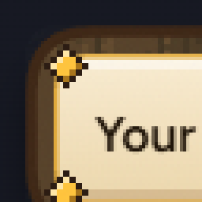
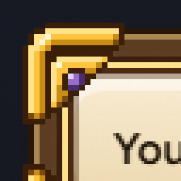
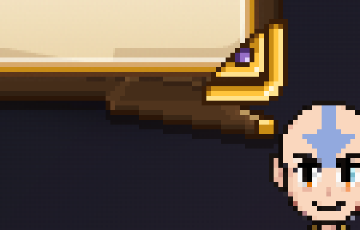
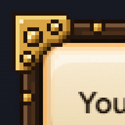
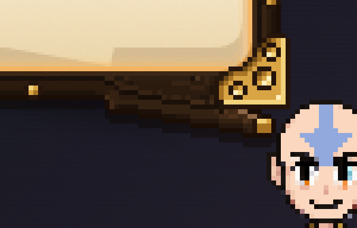
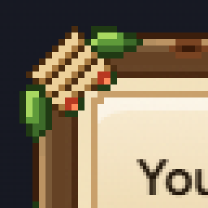
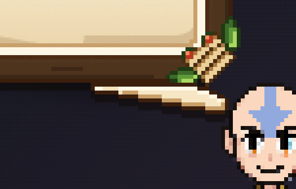
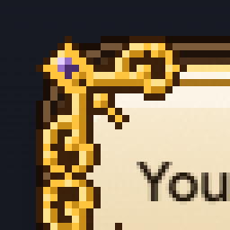
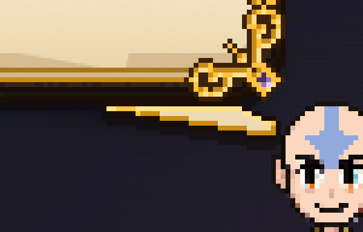

BTODAY
You picked B. Everything inside stays exactly as it is. This sheet is only the frame and the corners: four new rims, all real pixel art made from Samara's own wood.
Every picture is Aang's real bubble, drawn by the app itself, with the new rim laid on.
WHAT TO PICK R1 (my pick), R2, R3 or R4. Mixing is fine: say "R1 wood with R4 corners".
Each one on a short line, Claude's question (tall) and a job, then the corner and the tail at 4× so you can see every pixel.
Samara's warm band wood, cut as a real pixel frame round the bubble: lit top edge, a carved groove and a thin gold inlay, a lit step down onto the paper. Carved gold corner caps with a plum gem, like the velvet panel's corners. The wood runs on round the tail to a gold tip.



Darker tray wood with small brass rivets all along it and brass corner brackets like an old chest. A warm lantern glow on the paper's edge. Wood tail with a brass tip.


A chunkier, lighter rim with knots in the grain, a rope knot with leaves and berries at each corner, and a cream margin inside. The tail is paper, coming out from under the rim.


A slim dark rim with gold filigree curls and a gem at each corner, and two engraved lines inside (gold, then deep gold). The tail is paper with a gold edge, from under the rim.

